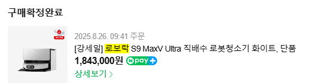

출처 : https://m.fmkorea.com/best/10584189086
산지 16개월 된 플래그쉽 갑자기 폭발해서 소방관오고 나중에 연기 줄어들었을 때 찍은 영상이라고함
집에 있을 때 돌린게 천운이었다고

출처 : https://m.fmkorea.com/best/10584189086
산지 16개월 된 플래그쉽 갑자기 폭발해서 소방관오고 나중에 연기 줄어들었을 때 찍은 영상이라고함
집에 있을 때 돌린게 천운이었다고
아니 카메라달린 물건을 뭔 배짱으로 중국산을 쓰는거임?
쟤네 그래서 보안 인증 유럽껄로 받음(삼성도 같은곳)
어? 나 로보락 s8 울트라 매주 2번씩 한 3년째 쓰고 있는데 내꺼도 저럴수가 있으려나
모든 배터리 달린 기계는 저럴 수 있음.
로봇청소기 중 로보락이 지금 퀄리티면으로 선두주자 맞지??
로보락이 1티어면 lg.삼성은 2티어는 되려나?
비슷함
스펙차이 마니 남
로봇 청소기 한정으로는 삼성 화웨이 차이가 반대로 중국 기업이랑 한국 기업이 역전되서 차이남
그럼 로보락 말고 뭐 써야하냐
가성비는 로보락이 좋은거 같았는데
로보락은 가성비보단 성능 아녔음?
로보락이 가성비였다고? 그냥 고가 상품인데
드론회사에서 나온게 좋다던데
삼성꺼 싸
얼;;
ㅅㅂ 나도 똑같은모델인디 존나쫄리네 화재보험이라도 들어야하나
벌써부터 로봇의 반란이
아니 나랑 산날짜도 비슷하고 구매한 플랫폼까지 똑같네 ㅈ되네
전 모델 쓰고있는데 ㄷㄷㄷ
ㄷㄷㄷㄷㄷㄷㄷㄷㄷㄷㄷㄷㄷㄷㄷㄷㄷㄷㄷㄷㄷ
중국 브랜드는 개인정보 안털리나?
먼지때문에 쇼트났나?
옛날 로청은 국산은 개판이고 중국산이 갑이었던걸로 아는데 요즘은 어떰 국산이 좀 따라왔낭??
상향평준화되서 싼거 .. 그게아니면 국산
친구 신혼셋으로 삼성꺼 샀다가 구려서 로보락으로 바꿈 스펙 차이 많이 남 as말고는 국산 아직 그닥임
난 올해사서 잘쓰는데 상향평준화라서 크게 차이안난다고 봄
삼성꺼 샀는데 ㅈㄴ 좋아서 부모님도 사드릴까 고민중인데... 보급형 이런걸로 산거 아니냐
애초에 짱꺠 제품 산 지능인데 누굴 탓함
배터리 붙은건 뭐든 터질수 잇어서... 뭐 알아서 보상 낙낙하게 넣어주지 않을까
슬슬 시작되는건가?